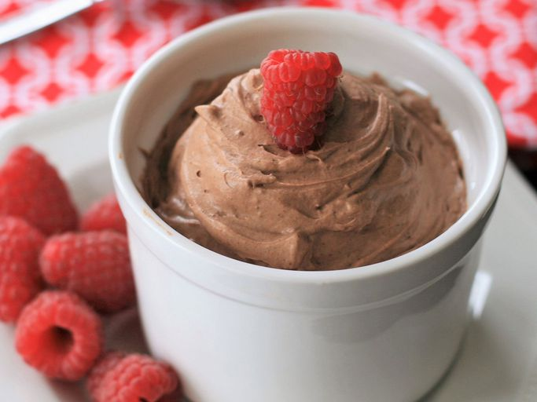

Keto Chocolate Mousse

This keto chocolate mousse is perfect when a sweet craving hits. It's so quick it will be ready in no time. No need to pre-whip the heavy cream — just throw everything into a bowl and mix! Use any keto-friendly granular sweetener that measures like sugar. I prefer the powdered version of Swerve, since it dissolves better. Adjust cocoa powder and sweetener amounts to suit your tastes. This is quite rich, so you don't need a lot to feel satisfied.
It can be hard to satisfy your sweet tooth while staying true to the keto diet. That's where this keto chocolate mousse comes in! The light and airy dessert is low-carb, easy to throw together quickly, and absolutely delicious.
Ingredients
- Meat: This super meaty lasagna has sweet Italian sausage and lean ground beef.
- Onion and garlic: An onion and two cloves of garlic are cooked with the meat to add tons of flavor.
- Tomato products: You'll need a can of crushed tomatoes, two cans of tomato sauce, and two cans of tomato paste.
- Sugar: Two tablespoons of white sugar add subtle sweetness and enhance the flavor of the sauce.
- Spices and seasonings: This lasagna recipe is flavored with fresh parsley, dried basil leaves, salt, Italian seasoning, fennel seeds, and black pepper.
- Lasagna noodles: Use store-bought or homemade lasagna noodles.
- Cheeses: Parmesan, mozzarella, and ricotta cheese make this lasagna extra decadent.
- Egg: An egg helps bind the ricotta so it doesn't ooze out of the lasagna when you cut into it.
Steps
- Make the meat sauce.
- Cook the noodles.
- Make the ricotta mixture.
- Layer the lasagna according to the recipe instructions.
- Cover with foil and bake.
- Let the lasagna rest before serving.